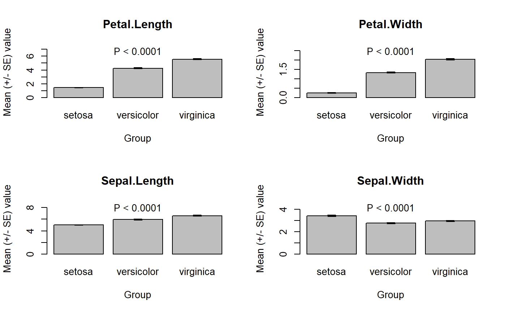

multtest.gp.RdPerforms group comparisons for multiple variables using parametric, permutational or rank tests, and corrects p-values. Gives also group means and standards errors for each variable.
multtest.gp(tab, fac, test = c("param", "perm", "rank"), transform = c("none", "sqrt", "4rt", "log"), add = 0, p.method = "fdr", ordered = TRUE, ...) # S3 method for multtest.gp plot(x, signif = FALSE, alpha = 0.05, vars = NULL, xlab = "Group", ylab = "Mean (+/- SE) value", titles = NULL, groups = NULL, ...)
| tab | data frame containing response variables. |
|---|---|
| fac | factor defining groups to compare. |
| test | type of test to use: parametric (default), permutational (non parametric) or rank-based (non parametric). See Details. |
| transform | transformation to apply to response variables before testing (none by default; |
| add | value to add to response variables before a log-transformation. |
| p.method | method for p-values correction. See help of |
| ordered | logical indicating if variables should be ordered based on p-values. |
| x | object returned from |
| signif | logical indicating if only variables with significant P-value should be plotted. |
| alpha | significance threshold. |
| vars | numeric vector giving variables to plot (rows of |
| xlab | legend of the x axis. |
| ylab | legend of the y axis |
| titles | titles of the graphs (name of the variables by default). |
| groups | names of the bars (levels of |
| … | additional arguments to testing functions in |
In case of parametric tests, t-tests or ANOVAs are used depending on the number of groups (2 or more, respectively). In case of permutational tests: permutational t-tests or permutational ANOVAs. In case of rank-based tests: Mann-Whitney-Wilcoxon or Kruskal-Wallis tests.
